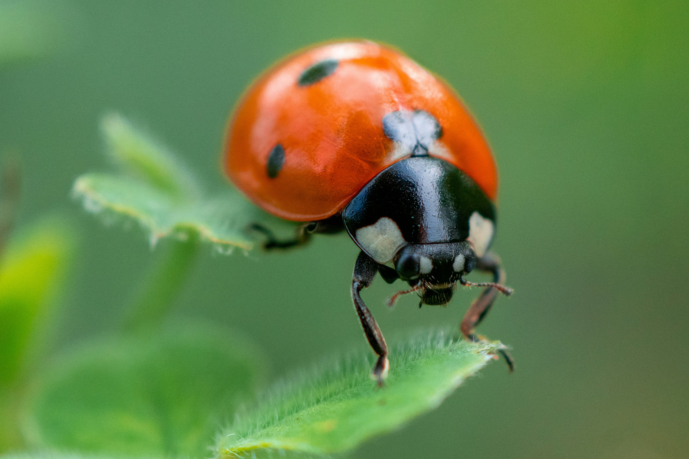

The IPM Framework
A sustainable approach to managing pests by combining biological, cultural, and physical tools.
1. Monitoring
Regularly inspect crops for early signs of distress. Use pheromone traps to track pest levels.
2. Early Detection
Identify specific pests (insects, fungi, or weeds) before they reach the "Economic Threshold."
3. Effective Treatment
Use biological controls first. Apply organic remedies or selective chemicals only when necessary.
Treatment & Organic Remedies

Biological Controls
Introduce natural predators like Ladybugs or Lacewings to manage aphid populations without chemicals.
Organic Eco-Friendly
Neem Oil Spray (Organic Remedy)
Preparation: Mix 2 tsp neem oil with 1 tsp liquid soap in 1 liter of water. Effective against whiteflies and mites.
Apply during late evening to avoid burning leaves.
Quick Tips
- ✔ Crop Rotation: Disrupts the life cycle of soil-borne pests.
- ✔ Proper Spacing: Increases airflow to prevent fungal growth.
- ✔ Sticky Traps: Best for monitoring flying insects like thrips.
- ✔ Resistant Varieties: Use seeds genetically suited to withstand local pests.